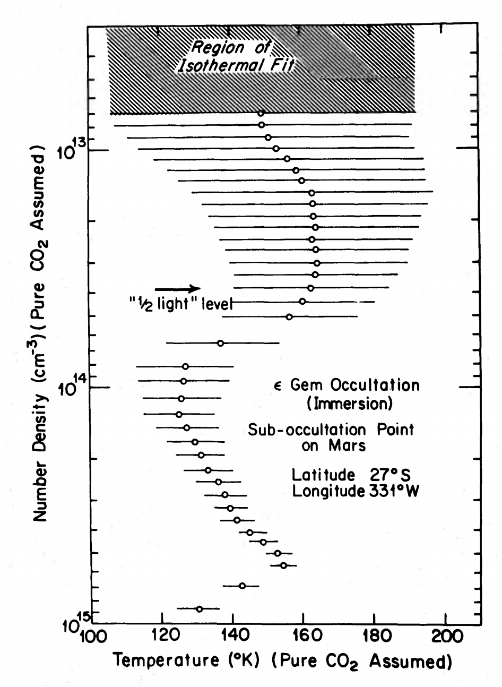
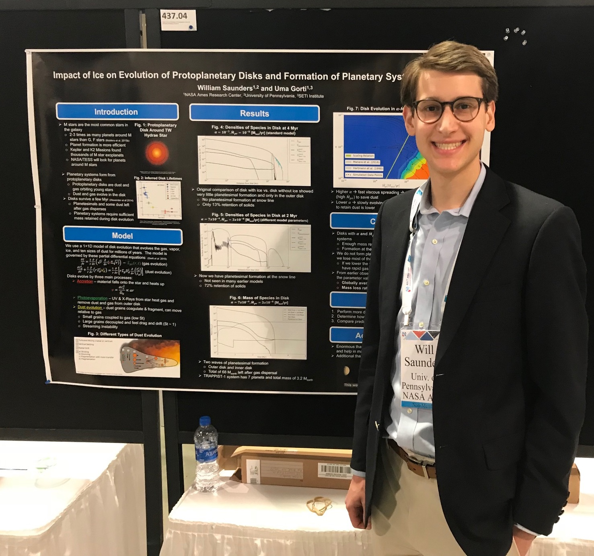

Ph.D. Student
Boston University
Deptartment of Astronomy
About Me
I am a first year Ph.D. student in the Department of Astronomy and a Research Assistant in the Center for Space Physics at Boston University. I work with Prof. Paul Withers at BU and Dr. Mike Person at MIT studying planetary atmospheres using stellar occultations.
I received my Bachelors in Physics & Astronomy from the University of Pennsylvania in 2018, where I worked with Prof. Gary Bernstein on trans-Neptunian objects.
Research
Stellar Occultations
I currently work with Prof. Paul Withers at BU and Dr. Mike Person at MIT on stellar occultations of solar system objects.
A stellar occultation is when a nearby objects (such as a planet or asteroid) passes in front of a star and obstructs the starlight from view on earth. Stellar occultations are used for a number of different scientific purposes:
Determine precise locations and sizes of trans-Neptunian objects.
Discover features like rings, volcanism, or moons around minor planets.
Measure features of planetary astmospheres.
Number 1 was how stellar occultations were used to determine the shape and position of Ultima Thule before New Horizons flew past it.
Number 3 is what I work on—how we can use stellar occultations to measure the composition, density, temperature, and pressure of the atmospheres of the planets. As a star moves behind a planet's atmosphere, the atmosphere acts like a giant lens, refracting the light from the star and causing it to spread out. This spreading out dims the star, so we can go in reverse: measure the dimming and determine what atmosphere must have caused it.

Temperature vs. pressure in the Martian atmosphere from stellar occultation of Mars. Note the large horizontal error bars. Source: Elliot et al. [1977]
My current research looks at a historic occultation of Mars by the star ε Geminorum in 1976. ε Gem is one of the brightest stars in the Gemini constellation and getting an occultation of Mars by a bright star is so rare, it hasn't happened since then.
Data taken from the Kuiper Airborne Observatory were analyzed and published in 1977 and the authors used the best techniques at the time to determine the atmosphere of Mars. On the left is an example from Elliot et al. [1977] showing the temperature versus pressure of the Martian atmosphere. We believe that with modern computers we can do a better analysis of the Martian atmosphere
In the 42 years since that paper was published, there have been 7 Mars orbiters, 4 Mars landers, and 4 Mars rovers that have helped astronomers understand the Martian atmosphere much better. With this modern understanding and better computing techniques, we hope to use the ε Gem occultation data to add to the understanding of the Martian atmopshere.
Past Research
Search for Trans-Neptunian Objects
As an undergraduate physics major at the University of Pennsylvania I worked with Prof. Gary Bernstein using the Dark Energy Survey to identify trans-Neptunian objects (TNOs). TNOs are any solar system body beyond the orbit of Neptune and represent everything from well-behaved Kuiper Belt objects to poorly-understood scattering objects with unusual orbits.
Finding TNOs requires comparing telescope images of the same patch of sky taken over different nights and looking for changes, which might be TNOs that moved through the field of view. Many other astronomical phenomena change, though, so filtering out just TNO candidates from thousands of images is a challenge.
Pedro Bernardinelli, a graduate student at Penn, has developed a technique to identify TNOs and my research as an undergrad was to develop a survey simulator, which is a way of characterizing the efficiency of the detection algorithm.
My survey simulator used the stars present in every image to calibrate how faint the telescope could see in every wavelength. I then generated a battery of 10,000 "fake" TNOs and simulated whether they could be detected by the telescope, which determined the efficiency of Pedro's technique is in identifying TNOs.
My research culminated in my senior honors thesis: Development of Efficiency Simulator for Detecting Planet Nine using the Dark Energy Survey
Protoplanetary Disks

Presenting my poster at AAS 231 in Washington, D.C. on Jan. 12 2018.
During the summer of 2017, I worked at NASA Ames Research Center on the formation of planetary systems with Dr. Uma Gorti. A protoplanetary disk is the dust and gas from which planetary systems form, but there is much uncertainty about how small dust grains can grow to planetessimals.
I used Uma's disk model to simulate how different amounts of water ice affect planet formation but found no significant impact. I also looked at how viscosity and photoevaporation impact the disk and found a range of parameters that allows the disk to keep enough mass to possibly form planets
Astrobites is a website run entirely by graduate students in physics and astronomy and publishes a short summary every day of a recent astronomy publication. Astrobites is designed for undergraduate physical science majors to learn about the lastest work in astronomy in only five minutes.
Some posts go beyond the traditional paper summaries, covering topics of applying for graduate school, student funding, and problems facing astronomy today.
I have been writing for Astrobites since January 2019 and all my posts are available on my Astrobites page. Below are some of my recent posts.
Magma flows hundreds of thousands of years ago might account for the water on Mars, but scientists do not know if Mars could produce magma that recently.